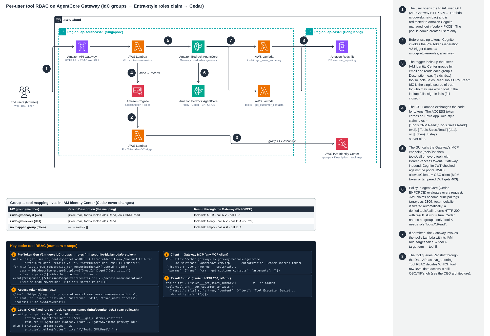

Architecture: IdC groups → Cognito roles claim → Cedar on AgentCore Gateway
One Gateway sits in front of several tools. User1 (wei) can call tools A and B, user2 (ds1) only A, and chen none. The group → tool mapping lives in the
identity provider, not in code: IAM Identity Center group Descriptions become a roles claim in the Cognito access token, and the Gateway's Cedar policies
check only that claim. This is the demo version; the customer version (Amazon Quick, Cognito groups, four mall tools) is on
Part 1 · Quick
(its diagram).

Open full size · Click the diagram to open it full size.
Animated walkthrough of this flow: flow-rbac.html (step-by-step token and policy path).